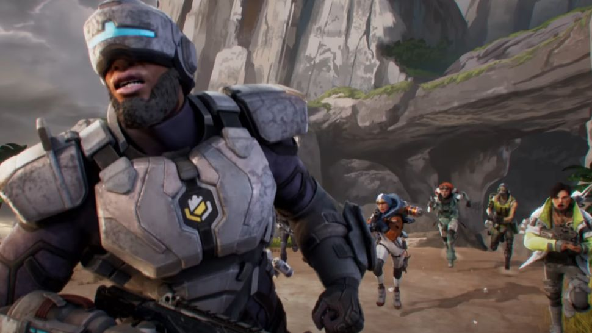

New Legend
NewCastle
Don't be fooled by the name: Apex Legends' Newcastle is no Geordie. Instead, he's a shield-bearing knight with the power to utterly lock down a location in fortifications.
The Season 13 trailer gave us hints at Newcastle's full kit, which we now have the details on. We see Newcastle deploy his Mobile Shield, an energy shield that can be controlled via drone. At one point he deploys another barrier while reviving Pathfinder (reminiscent of Lifeline's pre-rework revive shield), part of his Retrieve the Wounded passive. His ultimate a massive barricade called Castle Wall that, as far as the trailer suggests, can withstand a hell of a lot more damage than Rampart's walls.
- Mobile Shield (Tactical): Throw a controllable drone that creates a moving energy shield.
- Retrieve the Wounded (Passive): Drag downed allies as you revive and protect them with your Revive Shield.
- Castle Wall (Ultimate): Leap to an ally or target area and slam down, creating a fortified stronghold.
Newcastle is very much a defensive character. His kit is entirely focused on keeping himself and his teammates alive. Newcastle is ideal for people who like to play tank characters, and people who enjoy support roles. Between his abilities, he has a lot of up-time with shields and players should definitely take advantage of that. Stick close to your teammates and you should all succeed together.